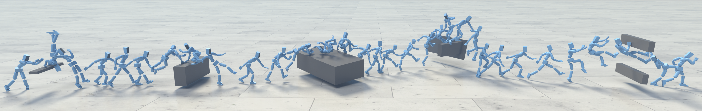

@article{
wang2026hil,
title={{HIL:} Hybrid Imitation Learning for Dynamic Athletic Control},
author={Wang, Jiashun and Jiang, Yifeng and Zhang, Haotian and Tessler, Chen and Rempe, Davis and Hodgins, Jessica and Peng, Xue Bin},
journal={{ACM} Trans. Graph.},
year={2026}
}